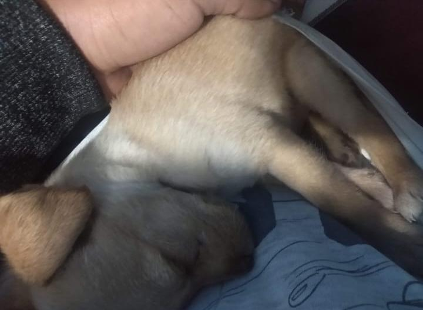
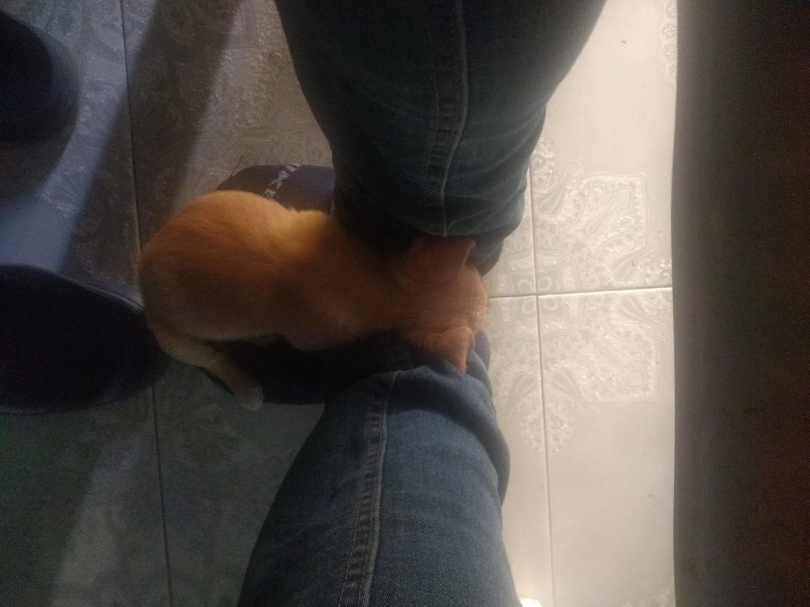
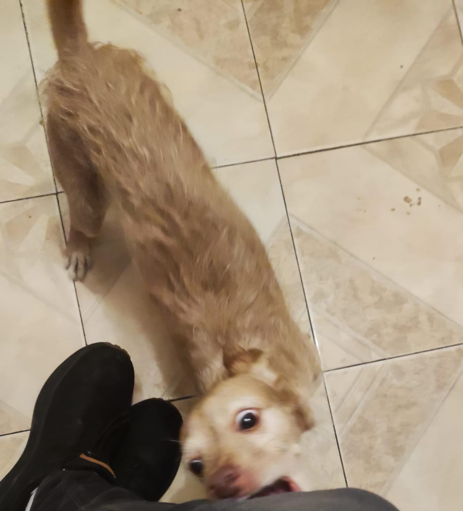

Mi perrito es la mejor compañía, actualmente tiene 5 años y es el mejor amigo que alguna vez pude desear.
Aquí una foto del día en el que lo adopté.
Hemos pasado muchas cosas juntos, se llama Compi porque el día que lo traje le dije a todos que era mi compita.
Cuando lo conocí era tan pequeño que cabía en mi mano.


Siempre es muy divertido y ocurrente, apesar de que no habla Español, puedo jurar que tenemos una comunicación a través del amor, el me entiende y yo a él.

Espero que te hayas divertido a conocer un poco del Compi y su historia.